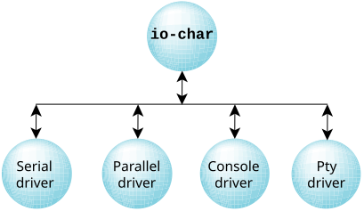

A key requirement of any realtime operating system is high-performance character I/O.
Character devices can be described as devices to which I/O consists of a sequence of bytes transferred serially, as opposed to block-oriented devices (e.g., disk drives).
As in the POSIX and UNIX tradition, these character devices are located in the OS pathname space under the /dev directory. For example, a serial port to which a modem or terminal could be connected might appear in the system as: /dev/ser1
Typical character devices found on PC hardware include:
Programs access character devices using the standard open(), close(), read(), and write() API functions. Additional functions are available for manipulating other aspects of the character device, such as baud rate, parity, flow control, etc.
Since it's common to run multiple character devices, they have been designed as a family of drivers and a library called io-char to maximize code reuse.

The io-char module contains all the code to support POSIX semantics on the device. It also contains a significant amount of code to implement character I/O features beyond POSIX but desirable in a realtime system. Since this code is in the common library, all drivers inherit these capabilities.
The driver is the executing process that calls into the library. In operation, the driver starts first and invokes io-char. Drivers are just like other QNX OS processes and can run at different priorities according to the nature of the hardware being controlled and the client's requesting service.
Once a single character device is running, the memory cost of adding more devices is minimal, since only the code to implement the new driver structure would be new.